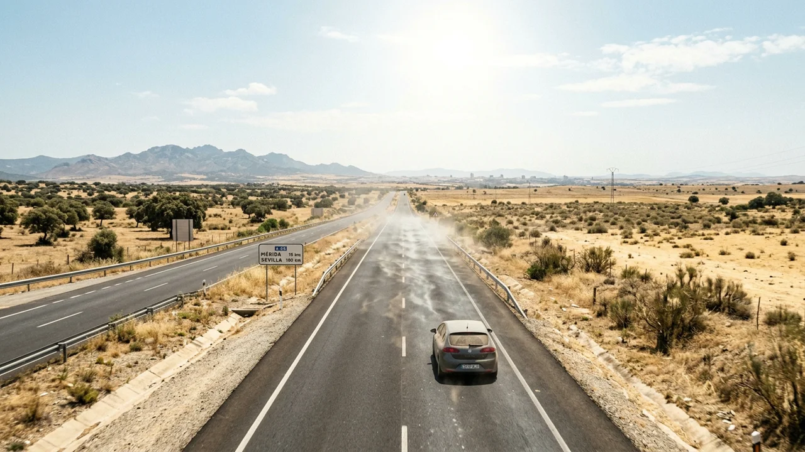
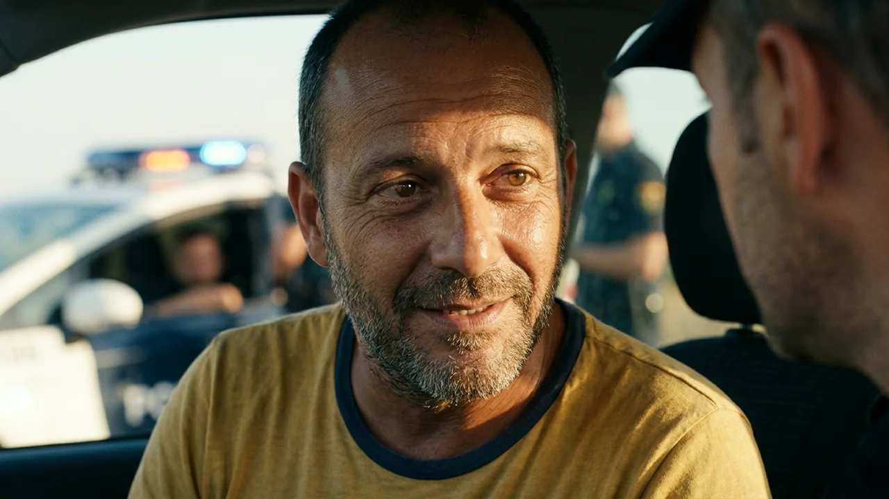
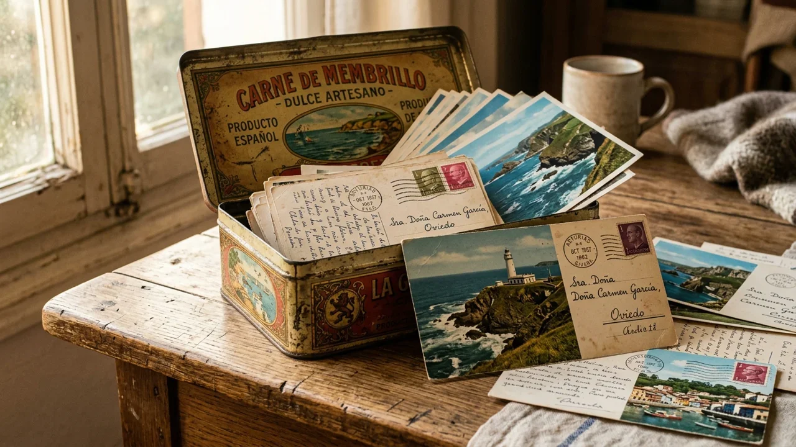
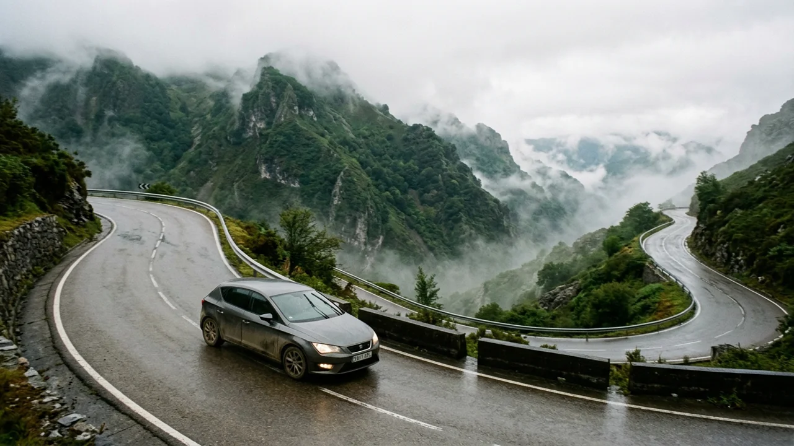
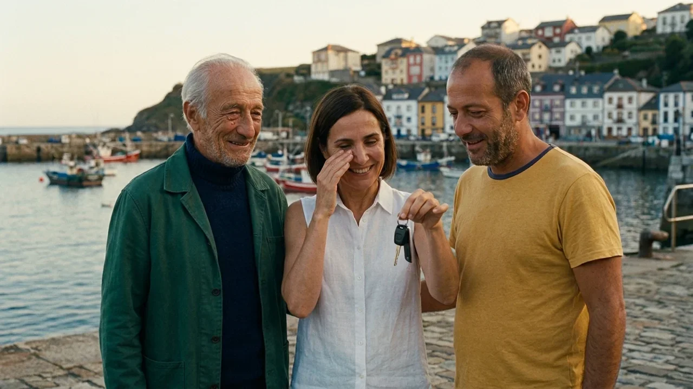

El compresor del aire acondicionado del Seat León había muerto en dos mil dieciocho y Nacho se negaba a pagar cuatrocientos euros por arreglarlo.
A las dos de la tarde, la autovía de la Plata a la altura de Mérida era una sartén de alquitrán derretido a cuarenta y dos grados a la sombra. El viento abrasador entraba a bofetadas por las ventanillas bajadas, batiendo los papeles del salpicadero y revolviendo la melena de Marta, que se abanicaba con una carpeta de cartón azul mientras apretaba los dientes para no gritar.
En el asiento trasero, sujeta con el cinturón de seguridad entre dos bolsas de viaje y una nevera de corcho, descansaba una urna funeraria de latón dorado. Debajo de la urna, dentro de una funda de plástico transparente, esperaba un sobre marrón de tamaño cuartilla cerrado con lacre rojo. La caligrafía enérgica de su madre advertía con tinta indeleble: «Prohibido abrir hasta llegar al muelle de Luarca. Quien lo abra antes no cobra su parte del piso de La Viña».
—¿Se puede saber por qué no pusiste el tren? —gritó Marta por encima del rugido del motor y el vendaval—. Trabajo mañana por la mañana en Madrid, Nacho. Hay AVE desde Sevilla. En tres horas me planto en Atocha y tú te vas a Asturias en lo que te dé la gana.
Nacho dio un trago caliente a una botella de agua que reposaba en el posavasos y no apartó los ojos de la carretera recta.
—Porque mamá dejó dicho por escrito ante notario que teníamos que llevarla los dos juntos en coche, Marta. Sin aviones y sin atajos. Llevas quince años sin pisar Cádiz, ni en Navidad ni cuando le dieron el diagnóstico. ¿Te parece mucho aguantar un viaje de ocho horas con tu hermano para despedir a la mujer que te parió?
Marta desvió la mirada hacia el páramo reseco de Extremadura. Se le clavaba en la garganta el sabor amargo de la culpa, pero su orgullo de abogada curtida en despidos colectivos le impedía dar el brazo a torcer.
—Hice lo que tenía que hacer —masculló ella, ajustándose las gafas de sol con dos dedos temblorosos—. Y mandé dinero todos los meses. Cada recibo de la residencia de día lo pagué yo.
—El dinero no le cambiaba las sábanas cuando se meaba en la cama, hermana —soltó Nacho con una sequedad que le cortó el aire.
Durante los siguientes cien kilómetros, el único sonido fue el traqueteo de la chapa y el silbido del aire ardiente.

Cerca del enlace de Benavente, dos conos naranjas y un furgón verde de la Agrupación de Tráfico de la Guardia Civil estrecharon la calzada a un solo carril.
Un agente joven con chaleco reflectante les dio el alto agitando una pala fosforita. A su lado, un pastor alemán con arnés negro husmeaba el aire caliente con las orejas tiesas.
Nacho orilló el coche al arcén polvoriento y paró el motor. El repentino silencio fue espeso como la pez.
—Buenas tardes —dijo el agente asomándose a la ventanilla del conductor—. Control de seguridad ciudadana. Apaguen el motor y muestren la documentación del vehículo, por favor.
Nacho le entregó los papeles con manos sudorosas. El agente revisó el permiso de circulación, echó un vistazo al interior recalentado y frunció el ceño al reparar en el asiento trasero.
—¿Qué llevan ahí atrás atado con el cinturón?
—Es nuestra madre, agente —respondió Nacho con la naturalidad gaditana que siempre le traía problemas con la autoridad—. La llevamos a enterrar al norte.
El guardia civil no pestañeó. Hizo una seña con la mano y su compañero se acercó con el perro. En cuanto el animal asomó el hocico por la ventanilla trasera, fijó la mirada en la urna dorada, dio dos bufidos secos y se sentó de golpe sobre el asfalto caliente, clavando las patas delanteras.
Los dos guardias cruzaron una mirada instantánea.
—Hagan el favor de descender del vehículo y abrir el maletero. Ahora mismo.
Marta bajó del coche tambaleándose por el golpe de calor, alisándose el traje de lino pegado a la espalda.

—Oiga, somos abogados, esto es un entierro civil legal y tenemos el certificado de defunción del Registro de Cádiz —protestó con su tono más formal de sala de vistas—. Mi hermano es un imprudente, pero la urna está precintada por el tanatorio de San Severiano.
—El perro marca sustancia orgánica sospechosa, señora —zanjó el cabo con frialdad—. Si no colaboran, tendremos que proceder a la apertura forzosa en dependencias policiales.
Nacho, lívido bajo el bronceado, desabrochó el cinturón y tomó la urna con las dos manos. Pesaba casi tres kilos. La colocó sobre la chapa del maletero.
El cabo sacó una navaja multiusos y rompió con cuidado el precinto de cera de la tapa roscada. Marta se tapó los ojos con una mano, horrorizada ante la profanación.
La tapa giró con un chirrido metálico.
El agente iluminó el interior con una linterna pequeña. Se quedó inmóvil. Luego miró a Nacho, miró a Marta y volvió a mirar dentro de la urna. Metió dos dedos enguantados y sacó un puñado de arena gruesa y dorada, mezclada con dos coquinas secas y una concha de almeja blanca.
En el fondo de la urna, doblado con precisión milimétrica dentro de una bolsita hermética de plástico para congelados, descansaba un papel doblado en cuatro.
—¿Esto es una broma? —preguntó el guardia civil, mostrando el papel a la luz de la tarde.
Nacho alargó la mano, aturdido, y desdobló la nota. La letra apretada de Encarna Villar se leía con una claridad demoledora:
«Si os ha parado la Guardia Civil, saludadles de mi parte con educación, que los pobres hacen su trabajo con esta calorina. Las cenizas no están aquí. Las tiene vuestro padre en Luarca. Seguid el viaje, dejaos de peleas y espabilad de una vez. Besos, mamá».

La habitación del hostal de carretera a las afueras de León olía a pino desinfectante y colcha de franela vieja.
Sobre la mesilla de noche, entre una botella de ginebra barata y dos vasos de tubo, reposaban la urna llena de arena de la playa de La Caleta y el sobre marrón con el lacre intacto.
Marta estaba sentada al borde de la cama, descalza, con la mirada perdida en el televisor apagado. Se había fumado cuatro cigarrillos seguidos en la ventana del baño.
—Papá murió en noviembre del noventa y uno —dijo ella, con una voz tan baja que casi se perdía con el rumor de la carretera—. Yo tenía doce años, Nacho. Vi a mamá de luto riguroso durante dos inviernos enteros. Vi el oficio fúnebre en la iglesia de la Palma con la caja vacía porque la mar no devolvió el cuerpo de la lancha. ¿De qué demonios está hablando esta carta?
Nacho se sirvió dos dedos de ginebra sin hielo y se apoyó contra el armario de contrachapado. No parecía tan sorprendido como su hermana; en sus ojos había un cansancio mucho más hondo, el de quien lleva años encajando piezas que no se atreve a mirar de frente.
—En el armario de mamá, detrás de las mantas de invierno, había una lata de carne de membrillo —confesó Nacho mirándose los pies—. Cada año, por Nochebuena, aparecía dentro una postal de felicitación con un sello de Asturias. Paisajes del puerto de Luarca, del faro, de la ría. Siempre con la misma caligrafía temblorosa que nos escribía de chicos. Yo le pregunté una vez y se puso como una fiera. Me dijo que eran recuerdos de una prima lejana que se había ido a servir a Gijón. Pero en la familia de mi madre nunca hubo nadie en el norte.
Marta levantó la cabeza de golpe.
—¿Y por qué no me lo dijiste?
—¿Cuándo te lo iba a decir, Marta? ¿Cuando te llamaba por tu cumpleaños y despachabas la conversación en tres minutos porque tenías una reunión con un cliente? ¿El día que mamá se cayó en la cocina y tardaste cuatro días en devolverme el mensaje?
Marta se puso en pie, herida en lo más vivo:
—¡Yo me fui de Cádiz porque encontré una carta debajo de su colchón! —estalló por fin, alzando la voz hasta que vibró el cristal de la ventana—. ¡Tenía diecisiete años, Nacho! Una carta de amor de tres páginas firmada con una letra B mayúscula, diciéndole que la esperaba donde rompían las olas. Creí que mamá tenía un amante mientras papá se pudría en el fondo del Atlántico. No pude soportar verla rezarle al Cristo de la Misericordia con la vela encendida mientras guardaba las cartas de otro hombre. Por eso me largué a Madrid y no quise volver.

El silencio volvió a caer sobre la habitación, denso y doloroso.
Nacho se acercó despacio a la mesilla. Tomó el sobre marrón con el sello de lacre rojo y lo rasgó por el lomo sin pedir permiso.
La carta de Encarna estaba escrita en cuatro folios cuadriculados arrancados de un cuaderno escolar, con la misma pluma estilográfica azul con la que rellenaba las quinielas.
«Mis queridos niños:
Si estáis leyendo esto juntos en algún hostalucho de mala muerte, significa que el chucho de la Guardia Civil ha hecho su trabajo o que habéis llegado a León sin mataros el uno al otro, lo cual ya es un milagro mayor que el de los panes y los peces.
Marta, hija mía: nunca hubo ningún amante. La carta con la B que encontraste cuando eras una chiquilla orgullosa era de tu padre. En el noventa y uno, a Benigno no se lo tragó ningún temporal. Lo trincó el Servicio de Vigilancia Aduanera frente a Sancti Petri en una planeadora con mil seiscientos kilos de chocolate marroquí. Tu padre era un hombre bueno, pero en aquella época no había trabajo ni para pipas y se metió en la boca del lobo para que no nos quitaran la casa.
Le cayeron ocho años en la prisión de Villanubla. Para que no os señalaran por la calle en el barrio, para que pudieras estudiar tu carrera de leyes sin que ningún señorito te llamara hija de narco, Benigno y yo juramos que para Cádiz él estaría muerto para siempre. Cuando salió de cumplir condena, el destierro ya era irreversible. Se fue a Asturias a trabajar de marinero en Luarca, donde nadie le hacía preguntas, y durante treinta años nos hemos querido a través de las cartas y de los viajes que yo hacía en autobús fingiendo que me iba a ver vírgenes a Covadonga.
Él tiene mis cenizas verdaderas. Las mandé por mensajería urgente tres días antes de ingresar en el hospital. Os he metido arena de La Caleta en la caja y os he hecho subir en coche porque si vais en avión os paran en el escáner del aeropuerto y se os cae el invento antes de salir de Andalucía.
Ahora id a Luarca, buscadlo en el muelle pesquero y dadle un abrazo de mi parte. Y después, si os queda vergüenza, os dais otro abrazo vosotros dos, que sois hermanos y os estáis perdiendo la vida por cabezones.
Vuestra madre, que os quiere».

A las once de la mañana del día siguiente, Luarca amaneció bajo un manto de orbayu fino que borraba la línea del horizonte entre los acantilados de pizarra y el mar de plomo.
El aire olía a manzana fermentada, a redes mojadas y a gasoil de bajura. Después del infierno de despeñaperros, los diecisiete grados del puerto asturiano se sentían como una tregua milagrosa.
Marta y Nacho caminaron por el espigón viejo con la urna vacía bajo el brazo. Al fondo del muelle, amarrada junto a la rampa de descarga, descansaba una lancha de madera azul y blanca con matrícula de Luarca: «La Tacita».
Sentado en un cajón de plástico volcado sobre el pantalán, limpiando con paciencia un palangre de anzuelos, un anciano de pelo blanco y chubasquero oscuro levantó la mirada al oír las pisadas sobre la grava húmeda.
Tenía los mismos ojos grises de Marta y la misma mandíbula ancha de Nacho.
Al verlos venir, las manos del viejo se quedaron suspendidas sobre el sedal. Se levantó muy despacio, apoyándose en la borda de la barca con las piernas temblorosas por la artrosis.
—Marta... Nacho... —susurró con una voz rota por el tabaco y los inviernos del norte—. Habéis venido.
Nacho no esperó. Dio tres zancadas largas por la madera mojada del pantalán y envolvió al anciano en un abrazo feroz, hundiendo la cara en el cuello áspero del jersey de lana mientras rompía a llorar con el llanto desbocado de un niño de diez años.
Marta se detuvo a dos pasos, con el corazón golpeándole en las sienes. El anciano alzó la vista por encima del hombro de su hijo y la miró con una ternura tan infinita, tan desprovista de reproche, que toda la coraza de abogada brillante se derrumbó en un segundo.
Dio un paso al frente y se abrazó a los dos, empapándose la chaqueta bajo la llovizna fría del Cantábrico.
Media hora después, la lancha cabeceaba suavemente a una milla de la bocana del puerto, mecida por las olas largas del Atlántico norte.
Benigno sacó de la cabina una pequeña urna de barro cocido, sin adornos ni dorados. Entre los tres, con las manos entrelazadas sobre la borda, volcaron el polvo gris sobre las aguas oscuras. El viento se llevó una parte en un remolino blanco que se disolvió en el aire salino, mientras el resto descendía en una estela clara hacia las profundidades.
—Buen viaje, Encarna —murmuró el viejo, santiguándose con torpeza—. Ya estás donde querías.
De vuelta en el muelle, bajo el sol suave que empezaba a abrirse paso entre las nubes asturianas, Marta sacó las llaves del Seat León y miró a su padre.
—En el coche hace un calor horrible y no funciona el aire acondicionado, papá —dijo ella con una sonrisa limpia, mientras se secaba las lágrimas de las mejillas—. Pero creo que ya va siendo hora de que vuelvas a ver La Caleta.